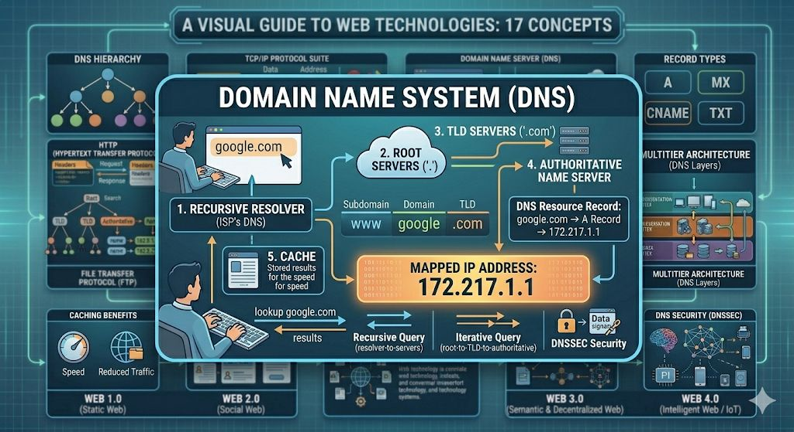

DNS is a hierarchical, distributed database system that translates human-readable domain names (e.g., example.com) into machine-readable IP addresses, essential for internet navigation.Queries flow recursively (stub resolver forwards to recursive resolver, then root → TLD → authoritative) or iteratively (step-by-step). EDNS expands UDP payloads beyond 512 bytes for larger responses. Caching uses TTL to reduce latency.
Cache poisoning (Kaminsky attack) forged by spoofing; mitigated by DNSSEC (cryptographic signatures chaining from root). DoS via amplification (BGP anycast distributes load). DoH/DoT encrypt queries.
Over 1,500 TLDs (ICANN-managed); 13 root server clusters (1,000+ instances)